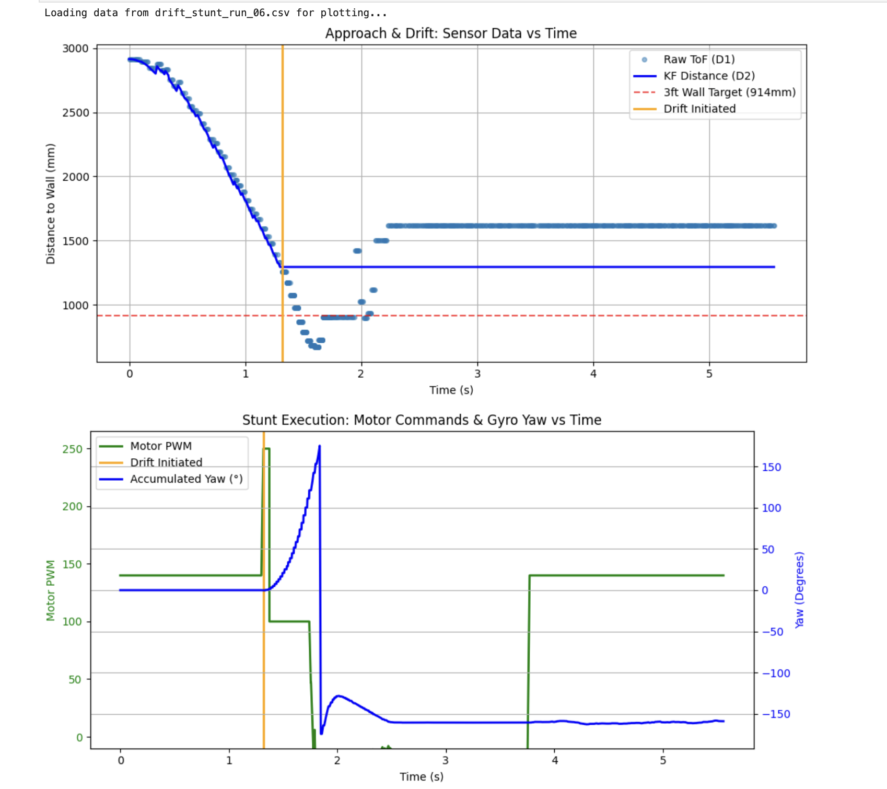
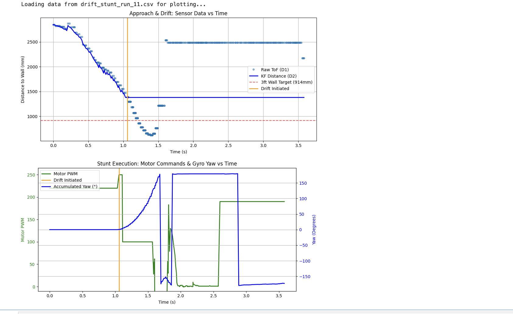
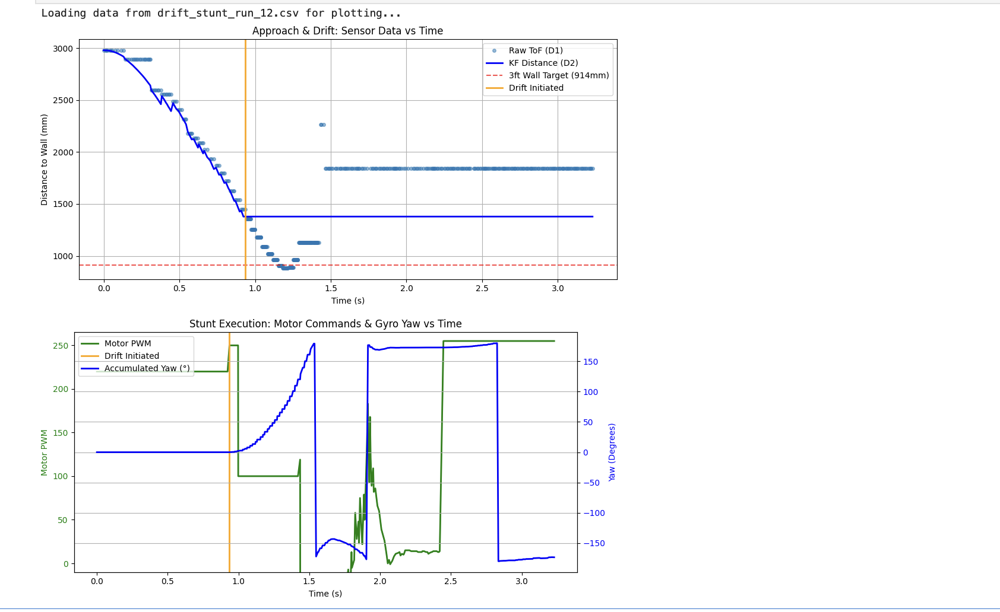

1. Overview
For this lab I chose Task B: Drift. The objective is to start at a designated line under 4 meters from the wall, drive forward at high speed, and initiate a 180-degree turn when within 914 mm (3 ft). I chose the drift to use momentum to carry the robot through the turn rather than risking a collision. I did not apply tape to the wheels; instead, I used a programmatic kick-then-sustain motor pattern to aggressively break the floor's natural friction.
2. System Architecture: The 4-Phase Hybrid State Machine
My implementation is a hybrid open- and closed-loop system merging my previous labs. From Lab 7, I carried forward the Kalman Filter (KF) and ToF distance pipeline. From Lab 6, I reused the ICM-20948 DMP yaw tracking and PID orientation controller.
During initial testing, purely open-loop spinning caused over-rotation past 360° due to inertia, while pure PID spinning caused the robot to regain traction and arc into the wall. The solution was a four-phase state machine assigning the optimal control strategy to each phase:
enum DriftPhase {
PHASE_IDLE = 0,
PHASE_APPROACH = 1, // Closed-loop: KF distance tracking
PHASE_DRIFT = 2, // Open-loop: aggressive kick/sustain spin
PHASE_CORRECT = 3, // Closed-loop: Lab 6 PID snaps to 180°
PHASE_RETURN = 4, // Open-loop: drive back to start
PHASE_DONE = 5
};3. Phase 1: Approach and the Kalman Filter
The robot drives forward at APPROACH_PWM = 220. Since the Arduino loop() runs much faster than the ToF sensor's 33 ms period, I compute the elapsed dt each cycle for the KF. This prevents accumulating phantom distance.
Every loop, the KF predicts using the normalized PWM. Upon ToF firing, the KF updates. This yields a continuous distance estimate at the loop rate — critical at approach speeds where the robot travels 100–150 mm between 30 Hz samples. The plots confirm the KF (solid blue) tracks the raw ToF cleanly, showing no significant lag when the drift triggers.
4. Phase 2: Open-Loop Drift and Slip Compensation
I set DRIFT_TRIGGER_MM = 1400. Triggering above 914 mm accounts for forward momentum carrying the robot before the wheels break traction. The spin uses a kick-then-sustain pattern: 250 PWM for 75 ms to violently break static friction, then 100 PWM.
Instead of targeting 180°, I set YAW_TARGET_DEG = 120° and let rotational inertia coast the robot the remaining ~60°. In the motor plots, PWM drops near 120°, and yaw continues climbing under momentum.
5. Phase 3: Closed-Loop PID Correction
Post-drift, control hands to my Lab 6 PID targeting −180°. Run 06 used Kp = 0.04. The yaw settled at −150° — a 30° steady-state error. Mathematically, a 30° error multiplied by Kp = 0.04 produces a raw PID output of 1.2, which the motor deadband entirely absorbed, resulting in zero movement.

Figure 1 — Run 06 (baseline). The KF tracks the ToF cleanly. Drift triggers at ~1.3 s. The yaw settles at ~−150° and stalls. The PID correction produces no movement because Kp = 0.04 generates a command too small to overcome deadband.
To fix this, I raised Kp = 2.0 and introduced an integral term (Ki = 0.05) to accumulate steady-state error and spool up torque until overcoming friction. Run 11 shows the result: the PID fires two corrective motor bursts, snapping the yaw cleanly to −180°.

Figure 2 — Run 11 (Ki added). The two green PWM spikes at ~1.8 s and ~2.0 s are the PID commands. The yaw trace corrects post-drift and settles perfectly at −180°.
6. Phase 4: Return Sprint
Once locked to −180°, the robot sprints back. Run 12 demonstrates the speed-run configuration: approach PWM raised, PID stabilization wait reduced, and return PWM maximized to 255. Total run time dropped to ~3.2 seconds from over 5 seconds.

Figure 3 — Run 12 (speed run). Drift triggers at ~1.0 s due to higher velocity. Yaw correction completes by ~2.0 s. The green plateau from ~2.3 s onward is the 255 PWM return sprint.
7. Live BLE Tuning
Every parameter — approach PWM, trigger distance, yaw target, spin profile, PID gains, and return PWM — is configurable over BLE at runtime via a single Python command. The entire progression from Run 06 to Run 12 was driven entirely by BLE without recompiling.
# Final speed-run parameters sent via Python BLE
ble.send_command(CommandTypes.SET_GAINS,
"11|AP:220|TR:914|YT:120|TK:250|TS:100|TP:75|Kp:2.0|Ki:0.05|Kd:0.5|RP:255|RT:800")8. Videos
Red tape marks on the floor indicate the two reference distances: 4 m from the wall (the starting line) and 914 mm (the required drift trigger). Video 2 clearly shows the robot initiating the drift exactly at the 914 mm mark, validating that the Kalman Filter triggers the state transition at the correct distance.
Video 1: Full-speed stunt run — approach, drift, and return.
Video 2: Speed-run configuration — total time ~3.2 s.
Video 3: Slow-motion capture of the open-loop drift breaking traction.
9. Summary
Building upon prior labs allowed me to focus purely on stunt logic. The state machine facilitated isolated phase testing, while BLE tuning enabled rapid iteration. The final architecture — closed-loop KF for timing, open-loop kick/sustain for drifting, and closed-loop PID for heading correction — produced a fast, reliable stunt all in one lab.
AI Usage: AI was used in this lab for cross-checking logic, debugging the state machine transitions, and iterating on BLE parameter strings.